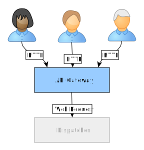
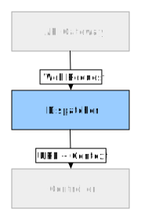
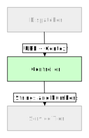
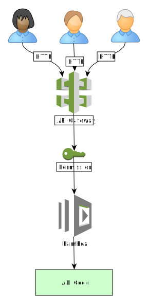

DevOps
Is Dev
Also Ops
Let's explain
stephen@harrison.org
The Plan Today
- How we got here
- Identify challenges
- Modern thinking
- Tools of the trade
- Demo and workshop
Brief History
- Software release cycles often measured in years
- Detailed specifications approved before development starts
- Called “Waterfall” Software Development Life Cycle
- Running applications required specialized hardware, operating systems
- Skills also specialized: operations, network, database, security, testing
Challenges
- Releases were huge and hard to test, fix, operate
- Waterfall SDLC makes changes hard
- Monolithic software makes testing hard
- Technical Leads and Architects lay out solutions before any code is written
- Key learnings from participants generally not shared
- Insights often critical to success of project
- False assumption that upstream is always correct
Challenges, 2
- Hand-off
- Business → Analyst → Architect → Lead → Developer → Tester → Release Engineer →
Operations
- Leaves gaps
- Does not require any one person to have the whole thing in their head
- Think solving a crossword by weekly conference call
- Or another example that explains it better
Modern Thinking
Confluence of Advances
- Smaller, incremental releases foster agility
- Ideas shared
- Changes incorporated
- Always check what's being built
- Gaps avoided
- Commodity server hardware, often in the cloud
- Skills and responsibilities not so siloed
- But specializations often still appropriate
Modern Thinking, 2
- Component approach decouples services
- Microservice is related functionality with an isolated datastore
- Very likely a RESTful API with JSON
- Prominence of containers (Docker)
- For encapsulation and fast deployment
- Ideal for microservices
Modern Thinking, 3
- Platform-as-a-Service (PaaS) Providers
- Amazon Web Services (AWS), Azure, Google
- Can run Docker containers at any scale
- Provide other infrastructure like databases
- AWS key differentiator is managed services
- Managed Docker clusters, ECS
- Scalable key/value store, DynamoDB
A Concrete Example
- RESTful API with JSON
- Delivers personalization data from Data Science
memberId → brand recommendationsmemberId → product recommendations
- Desirable properties
- Stateless
- Synchronous
- Transactional
Member Personalization API
| Resource |
Does this |
/member/{memberId}/brands |
For a given memberId show recommended brand ids |
/member/{memberId}/products |
For a given memberId show recommended product ids |
Return Values are Structures
[
{
"brandId": "brand-282mt2",
"score": 0.61420393
},
{
"brandId": "brand-5cs4jv",
"score": 0.8265825
}
]
Clear Responsibilities
Separation of Concerns
| Tier |
Inputs |
Knows About |
| API |
HTTP |
Dispatcher directs traffic |
| Dispatcher |
Web request |
API Controller to parse requests |
| Controller |
Request context |
Service to execute logic |
| Service |
Java types |
Java code and data store |
API Gateway
- Is managed infrastructure
- Can do SSL termination
- Can implement security
- Can do throttling

Dispatcher
- Is a runtime like Spring
- Binds URL paths to code
- Deals with declared URL parameters

Controller
- Accepts dispatched request
- Translates parameters to native values
- Calls service

Service
- Coordinates database calls
- Manages transactions
Let's Build and Deploy!
- Write the code
- Make a build
- Test the code
- Define stack
- Deploy the stack
- Test the stack
Show me the Code
https://github.com/NogbadTheBad/devops-example
- Code for Dispatcher (Spring Java)
- Code for Controller (Spring MVC, Java)
- Code for Service (Java)
- Infrastructure-as-code stack (Cloudformation YAML)
- These slides (hint: open
devops.html and press spacebar)
Java Code Walkthrough
In GitHub
Different ways to run the same code
- Spring Boot application that runs in an IDE or on command line
- Docker image that runs anywhere
- AWS Lambda (Serverless)
Show Spring Boot Standalone
Amazon Web Services (AWS) Review
- API Gateway is exactly what you think it is
- AWS Lambda is a fragment of code
- Integrates with API Gateway
- Can run at huge scale
- Wants to be stateless and ephemeral
- AWS CloudFormation defines infrastructure-as-code
- See https://github.com/awslabs/serverless-application-model
- Show our sam.yaml
The Stack in AWS
- Fully serverless meaning no classic server instances
- But still runs on computers: just ones we don't own and can't see
